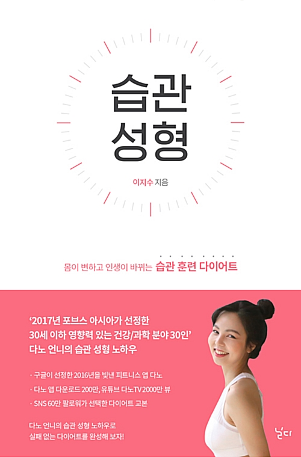
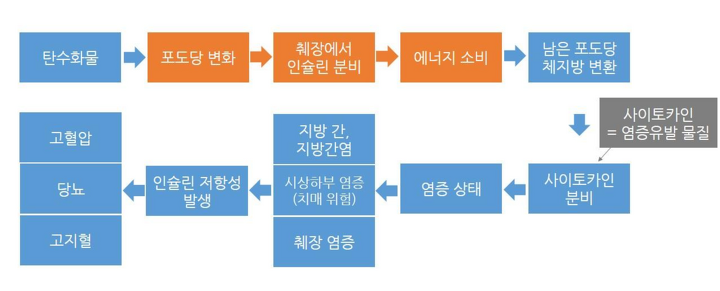
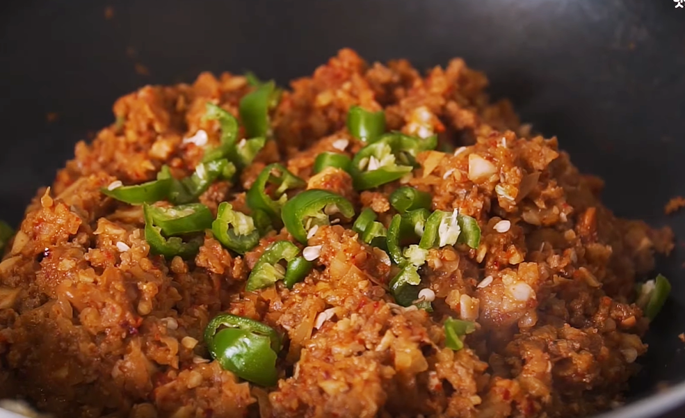
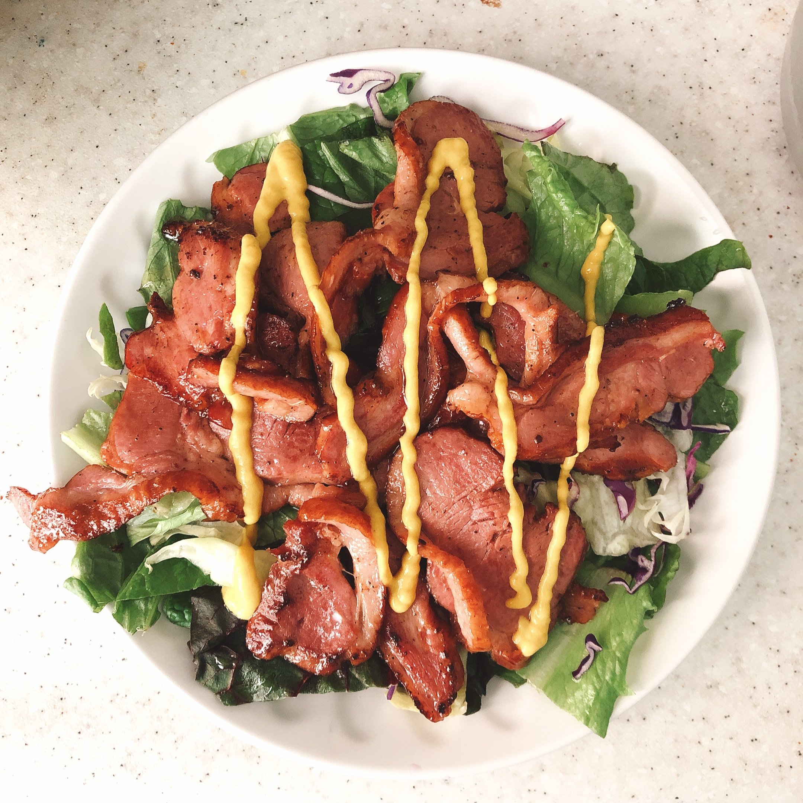
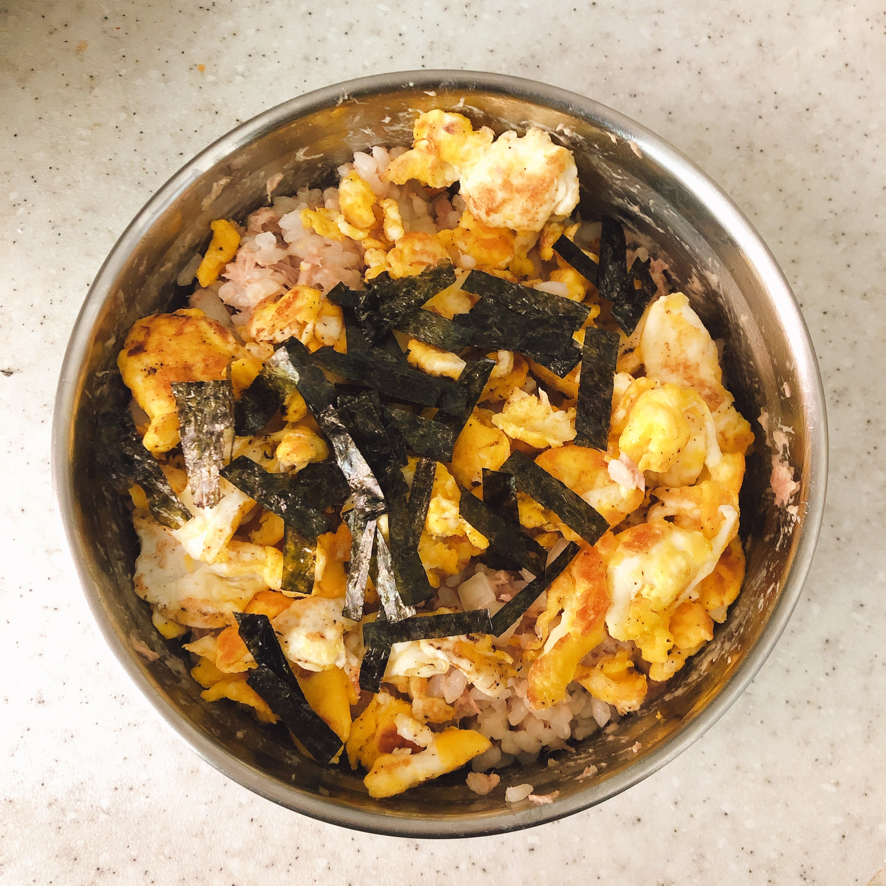
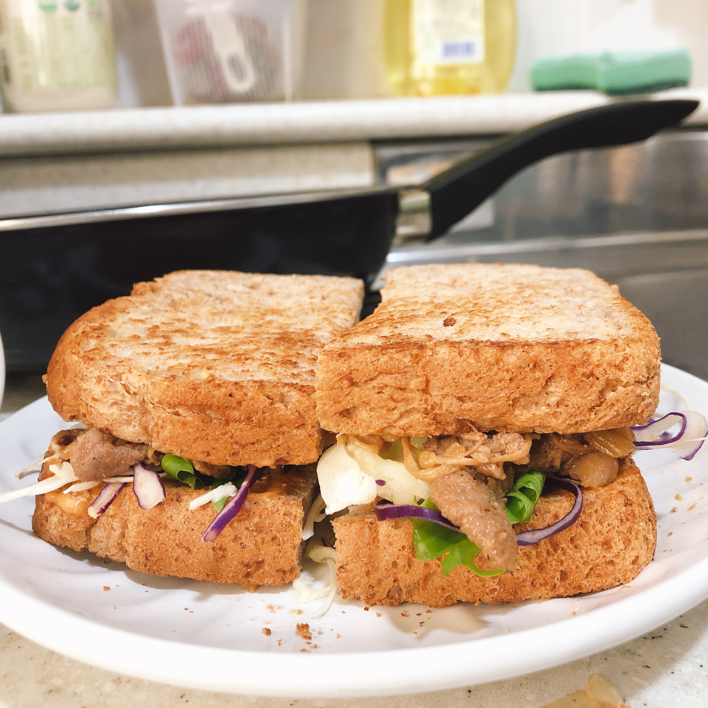
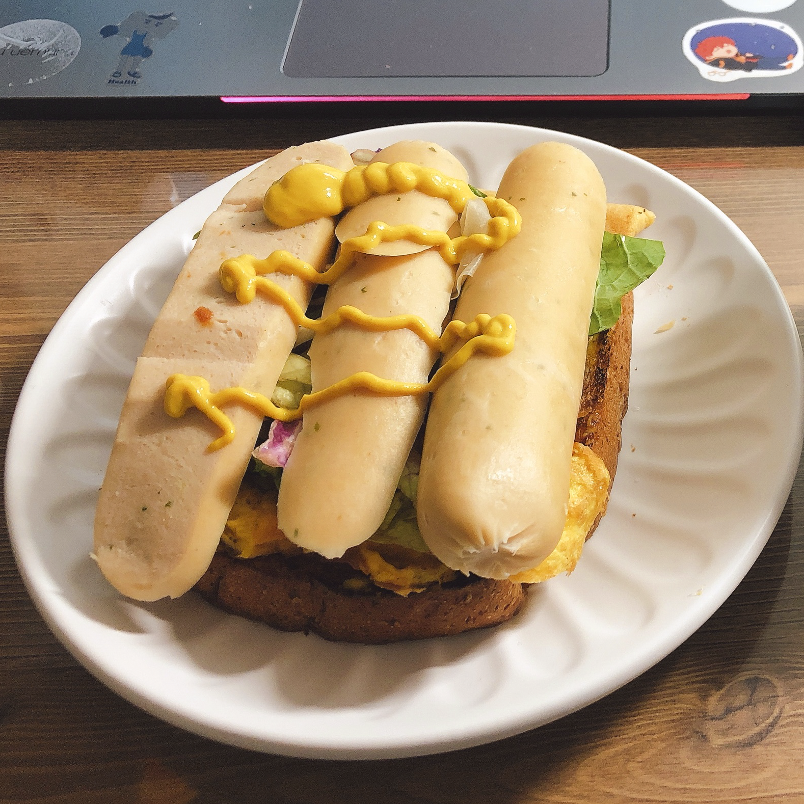

습관성형?
안좋은 생활패턴을 유지하는 것이 젊었을 때는 괜찮다고 해도, 이러한 생활 패턴이 계속 이어진다면 나이가 들었을 때 큰 병이 되어 나에게 돌아올 수 있다. 나의 생활패턴이 망가지기 시작한건 입시를 시작했을때 부터다. 학업으로 인한 수면 부족과 인스턴트 위주의 식사 때문에 고등학교 입학 이후부터 20대가 됐을때까지 약 20kg정도 찌고, 작년부터는 불면증까지 생겼다.
건강이 점점 안좋아진다고 고등학교때 부터 계속 느껴졌지만, 불면증까지 생기니까 건강이 안좋아졌다는게 확 느껴져서 무서웠다. 그 때문에 작년 12월 부터 건강관리와 다이어트를 제대로 시작했는데, 유튜브로 여러가지 운동을 따라해보다가 다이어트를 중점적으로 다루는 ‘다노TV’라는 채널을 알게 되었다. 운동과 소식만을 강조하는 수 많은 다이어트 채널 가운데 다노TV에서 강조하는 습관성형이라는 단어는 유독 눈에 띄었다.

‘습관 성형’은 억지로 의지를 끌어내는 것이 아니라, 자신의 몸을 제대로 탐구하고, 천천히 눈치채지 못하게 습관을 바꾸어 건강한 몸을 만드는 다이어트 방법이다. 의지로 해야 하는 일은 의지가 사라지는 수많은 상황이 닥치면 결국 실패하고 말지만 습관은 자연스럽게 손이 가고 발걸음이 가는 무의식적인 행동이기 때문이다. 자신의 나쁜 습관을 깨닫고 좋은 습관으로 바꾸는 과정, 그것이 습관 성형의 목표다.출처 : 습관성형 (저자 이지수)
이 책은 ‘다노TV’를 운영하는 유튜버가 쓴 책이다. ‘의지가 필요 없는 다이어트’라는 말은 ‘무조건 맛있는 음식을 참아야 하고, 땀 흘려 운동하는 것이 다이어트’라고 생각한 편견을 깨부숴주는 말이었다. 그동안 다이어트는 잠깐 하고 마는 것이라고 생각했고, 다이어트를 해도 일주일을 넘겨본 적이 없을 정도로 나는 먹는 것을 좋아하고 움직이지 않았다. 이런 나에게 다이어트가 습관이 되어 계속 지속 가능하게 되면 그래도 여태까지 했던 수많은 다이어트보다 긍정적인 결과가 나오지 않을까?라는 생각이 들어 작은 습관부터 성형해보기로 했다.
시작은 식습관부터!
다이어트 성공의 핵심은 80%가 식단이라는 말이 있을 정도로 다이어트에 식단 관리는 필수다. 하지만 세상에 널리고 널린 게 맛있는 음식인데 이것들을 꾸역꾸역 참아 아무리 건강한 몸이 된다고 해도, 참아야 하는 나의 정신건강은 역으로 더 안 좋아질 것이다. 맛있는 음식을 먹는다는 만족감과 건강을 둘 다 챙기기 위해 내가 만든 습관은 다음과 같다.
1. 탄수화물 적게 먹기 (밥은 한 끼에 반 공기만, 단 음식 줄이기).
2. 매일 양손 가득할 정도 양의 야채 먹기.
3. 칼로리는 일일이 신경 쓰지 않기.
새롭게 알게된 것
다이어트를 위해 여러 가지를 공부했을 때 새롭게 알게 된 사실이 하나 있다.
살을 찌게 만드는 가장 근본적인 원인은 고기도 아닌 바로 단 것(당질) 때문이라는 것!
살이 찌는 원리를 간단히 정리해보면 우리 몸은 탄수화물을 섭취하면 그것이 포도당으로 변하고, 포도당은 주 에너지원이 되어 신체에서 쓰인다. 포도당을 모두 에너지원으로 사용하면 문제가 되지 않지만, 탄수화물을 과다 섭취하여 포도당이 남게 되면 이것이 지방으로 변환되어 우리 몸에 남게 되는데 이 때문에 살이 찌게 되는 것이다.

탄수화물이 다이어트의 적이라고 해도 한국인은 밥심으로 산다. 밥순이인 나는 밥이 없으면 식사를 한 것 같지 않다. 그리고 쌀은 탄수화물이다.
아무리 다이어트를 한다고 해도 평생 밥을 안 먹고 살 수는 없었다. 그래서 시도한 방법은 밥 반 공기는 그대로 먹고, 남은 반 공기는 잘게 썬 양배추와 양파로 채우는 것이었다.

이렇게 하면 탄수화물 섭취도 줄이게 되고, 밥이 반 공기가 있기 때문에 밥 한 공기를 먹은 기분이 들 것 같았다. 야채밥은 맨밥으로 먹는 것 보다 다른 재료들과 함께 볶음밥처럼 먹는게 더 맛있어서 나는 그동안 볶음밥으로 많이 해먹었다.

야채밥으로 만든 된장 볶음밥
요리 할때 이 야채밥을 베이스로 탄수화물, 야채 섭취량만 신경 쓰고 칼로리 등 다이어트에 스트레스 받는 요소는 일절 신경 쓰지 않았다. 어차피 살은 빠질 테니까!
다이어트하면서 먹은 음식들

훈제오리 샐러드이래봬도 밑에 야채가 듬뿍 깔렸다.

참치마요
야채밥과 직접만든 설탕 안들어간 마요네즈로 만들었다.

불고기 샌드위치
식이섬유가 풍부한 통밀빵을 사용했고
야채를 듬뿍 넣었다.

소시지 계란 샌드위치
닭가슴살 소시지, 계란, 야채가 들어갔다.

닭볶음탕
닭가슴살이 듬뿍 들어갔다.
설탕말고 양파를 넣어 단맛을 냈다.
디저트를 마음껏 못 먹는 게 조금 괴로울 뿐이지, 평소에 먹는 음식들은 다이어트 음식이라는 생각도 안 들고 오히려 다이어트하기 전보다 훨씬 맛있고 건강하게 느껴졌다. 그리고 2주 중 하루는 종류에 상관없이 먹고 싶은 것을 먹는 날로 스스로 만들어서 그동안 음식 때문에 받는 스트레스는 거의 없었다.
다이어트 일기
“오늘 몸무게 앞자리가 바꼈다. 거의 한 달 동안 노력한 결과가 이렇게 눈으로 직접 보이니까 너무 뿌듯하고 내 자신이 자랑스러웠다. 아직 목표까지는 한참 남았지만 천천히 꾸준하게 계속하면 언젠가 성공할거다. 난 할 수 있다.”
다이어트 일기 20일차 / 2020.02.09
“오늘 참치마요 해 먹었는데 개존맛탱이었다. 마요네즈 좀 만 더 넣었으면 완벽했을텐데 얼마 안남았어서 좀 아쉽.. 식단 건강하게 먹으니까 생리주기 규칙적으로 변한거 진짜 신기하다. 빨리 피부도 좋아져라..”
다이어트 일기 43일차 / 2020.03.08

다이어트를 시작하고 그날그날 무엇을 먹었는지, 오늘은 뭘 했는지 매일 일기를 쓴다.
딱히 제한을 두지 않아서 아무말 대잔치인 일기지만, 다이어트는 혼자만의 싸움이라 잘하고 있다고 격려해 주는 것도 나밖에 없으니까 되도록이면 좋은 말만 쓰고 있다.
처음에는 습관 들이는 게 귀찮고 자주 까먹었지만, 이제는 밤에 운동 다 하고 씻은 다음 혼자 하루를 돌아보는 힐링타임이 되었다. 이렇게 일기를 써 두면 다이어트를 하다 지칠 때 다시 읽어보면 힘도 되고 내가 어떤 음식을 먹었을 때 더 행복했는지 알 수 있어서 다이어트를 계속 지속하는데 큰 도움이 되는 것 같다.
건강한 신체에 건강한 정신이 깃든다.
아직 현재진행형이지만 지금까지 한 결과를 말해보자면
1. 현재 시점으로 약 12kg 감량.
2. 불규칙했던 생리주기 칼같이 규칙적으로 변함.
3. 불면증 없어짐.
습관성형을 시작한 지 3개월 정도 됐지만 결과는 놀라웠다. 예전보다 훨씬 몸이 가벼워진 것을 느끼며 하루를 시작하고, 내일은 더 건강해질 것이라는 생각으로 마무리해서 자존감도 많이 올라갔다. 가장 크게 느낀 점은 항상 나 자신이 의지박약이라고 생각했는데 나도 하면 할 수 있다는 사람이라는 걸 이번 방학 동안 많이 깨달은 것 같다.
‘다이어트는 평생의 숙제’라는 말은 말도 안 된다고 생각했다. 맛있는 음식을 참아가며 하기 싫은 운동을 평생 해야 한다는 건 거의 고문이므로. 하지만 안 좋은 작은 습관부터 고쳐가며 천천히 몸에 체화시킨다면 그것이 곧 건강한 생활이 되니까 굳이 다이어트라는 말로 포장하지 않아도 건강하게 오래 지속 할 수 있을 것이다.